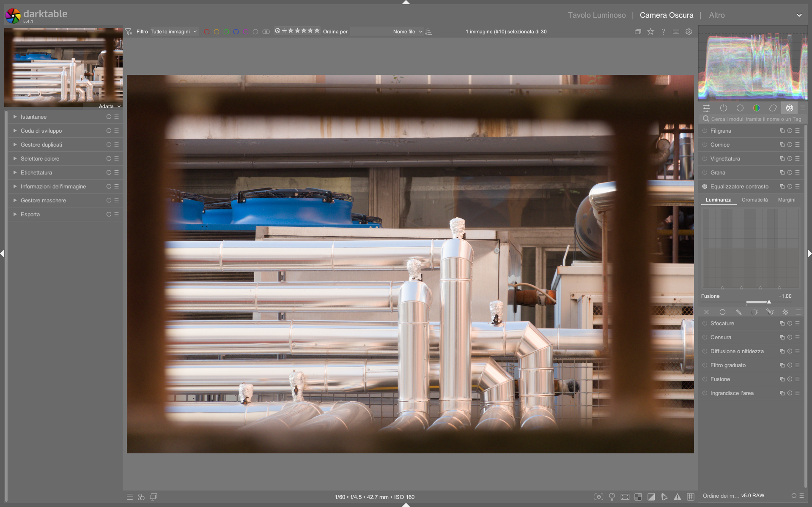

Contrast Equalizer¶
Il modulo contrast equalizer è uno strumento avanzato per il controllo del contrasto locale e globale basato sulla decomposizione wavelet. Opera nello spazio colore CIE LCh (Luminanza, Crominanza, Tonalità), permettendo di regolare separatamente luminosità (luma) e saturazione (chroma) a diverse scale di dettaglio — dalle strutture grossolane (coarse) a quelle finissime (fine) — senza introdurre artefatti cromatici o gradient reversal1. È il modulo di riferimento per nitidezza selettiva, bloom controllato, riduzione del rumore multiscala e chiaroscuro strutturale in darktable 5.4+23.
Contrast Equalizer ≠ Local Contrast
Il modulo local contrast applica un filtro Laplaciano su una singola scala, mentre contrast equalizer lavora su 6–7 scale wavelet indipendenti, offrendo granularità superiore e compatibilità con la pipeline scene-referred. Usalo quando hai bisogno di controllo fine (es. preservare i peli di un insetto senza accentuare il rumore dello sfondo)14.
Panoramica¶
Contrast Equalizer non è un semplice “sharpening”: è un sistema di equalizzazione frequenziale che agisce su tre dimensioni distinte:
- Luma — Controllo del contrasto luminoso a ogni scala wavelet
- Chroma — Regolazione della saturazione cromatica a ogni scala
- Edges — Affinamento dell’edge awareness per prevenire halo e gradient reversals1
Opera in spazio CIE LCh, quindi è insensibile alle variazioni di bilanciamento del bianco e mantiene la linearità fisica dei dati fino alla fase finale della pipeline3. Questo lo rende ideale per flussi scene-referred, dove il contrasto deve essere applicato prima del tone mapping (AGX/Sigmoid) e dopo la correzione tecnica (denoise, demosaic)2.
Perché usare wavelet invece di FFT o Laplaciano?¶
A differenza dei filtri spaziali tradizionali, la decomposizione wavelet à trous utilizzata da contrast equalizer:
- Preserva la località spaziale dei dettagli
- Non introduce aliasing o ringing1
- Permette di isolare e trattare separatamente rumore (alta frequenza) e struttura (bassa frequenza)5
- È matematicamente equivalente al modulo diffuse or sharpen, ma con interfaccia più intuitiva5
Non usare contrast equalizer prima del denoise
Applicare contrast equalizer prima del denoise profilato amplifica il rumore, specialmente nelle alte luci. L’ordine corretto è:
denoise profilato → contrast equalizer → tone mapping23
Flusso di lavoro consigliato¶
Il flusso ottimale segue la gerarchia fisica della luce e dei sensori:
1. Correzioni tecniche (lens correction, denoise profilato)
|
2. Esposizione (grigio medio a ~18.45%)
|
3. Contrast Equalizer (nitidezza, bloom, controllo rumore)
|
4. Tone Mapping (AGX/Sigmoid)
|
5. Gestione colore (color calibration, color balance rgb)
Passo 1: Imposta la scala di visualizzazione¶
Prima di modificare qualsiasi curva, zooma all’80–100%. Le bande alternate (chiare/scure) nel fondo della griglia indicano quali scale sono visibili a quella risoluzione:
- Le bande visibili = scale che avranno effetto immediato
- Le bande non visibili = scale troppo piccole per essere percepite — evita di modificarle1
Passo 2: Usa la modalità “difference” per testare le curve¶
Attiva la modalità blend “difference” (clicca sull’icona della maschera nella barra degli strumenti). In questa modalità, solo le aree modificate appaiono in bianco/nero:
- Sollevare un punto sulla curva luma → compare il contorno dei dettagli a quella scala
- Sollevare un punto sulla curva chroma → compare la saturazione locale a quella scala
Questo ti permette di verificare esattamente quale struttura stai influenzando1.
Passo 3: Regola il controllo “mix”¶
Lo slider mix controlla l’intensità complessiva dell’effetto:
- Default: 1.000
- Valori positivi (0.3–1.5) → effetto progressivo
- Valori negativi (-0.5–-1.0) → inverte la curva (utile per softening o de-emphasis)
- Valore 0.000 → disabilita completamente il modulo1
⚠️ Attenzione: Quando il mouse è sopra la curva, la preview mostra l’effetto come se
mix = 1.0, indipendentemente dal valore reale. Allontana il mouse per vedere l’effetto effettivo1.
Parametri principali¶
| Parametro | Range | Default | Descrizione |
|---|---|---|---|
| mix | -1.000 to +2.000 |
1.000 |
Intensità globale dell’effetto. Valori negativi invertono la curva1. |
| smooth | 0.000 to 1.000 |
0.000 |
Smoothing della curva tra i punti di controllo. Utile per eliminare transizioni troppo brusche1. |
| luma curve | -1.000 to +1.000 per ogni punto |
0.000 su tutti i punti |
Aumenta (+) o diminuisce (-) il contrasto luminoso a ciascuna scala wavelet1. |
| chroma curve | -1.000 to +1.000 per ogni punto |
0.000 su tutti i punti |
Aumenta (+) o diminuisce (-) la saturazione cromatica a ciascuna scala1. |
| edges curve | -1.000 to +1.000 per ogni punto |
0.000 su tutti i punti |
Regola la sensibilità ai bordi per prevenire halo. Valori >0 aumentano l’edge awareness1. |
Scale wavelet disponibili (default: 7 scale)¶
Le 7 scale corrispondono a raggi approssimati di dettaglio (calcolati in pixel a 100% zoom):
| Scala | Raggio approssimativo | Tipico utilizzo |
|-------|------------------------|------------------|
| 1 (sinistra) | ~1 px | Peluria, texture pelle, rumore fine |
| 2 | ~2 px | Dettagli occhi, venature foglie |
| 3 | ~4 px | Contorni, linee sottili |
| 4 | ~8 px | Strutture medie (fiori, tessuti) |
| 5 | ~16 px | Forme globali (sfondo, cielo) |
| 6 | ~32 px | Blocchi tonali (ombre profonde, luci ampie) |
| 7 (destra) | ~64 px | Strutture molto grossolane (bloom, glow) |
🔍 Nota: Il numero massimo di scale dipende dalla risoluzione dell’immagine. Per immagini < 2 MP, darktable usa automaticamente 6 scale5.
Uso pratico per casi d’uso comuni¶
✅ Nitidezza selettiva (sharpening)¶
- Obiettivo: enfatizzare dettagli senza amplificare il rumore
- Impostazioni:
- Scheda luma: solleva i punti di controllo alle scale 1–3 (valori tipici:
+0.25a scala 1,+0.15a scala 2,+0.10a scala 3) - Scheda chroma: lascia a
0.000o abbassa leggermente (-0.05) per evitare “fringe” cromatici - Scheda edges: imposta a
+0.10su scale 1–2 per proteggere i bordi - Consiglio: usa una maschera parametrica su
JzoCzper limitare l’effetto alle zone con sufficiente crominanza6.
✅ Bloom / Glow artistico¶
- Obiettivo: creare un bagliore morbido attorno alle luci
- Impostazioni:
- Scheda luma: solleva solo il punto più a destra (scala 7) a
+0.40 - Scheda chroma: solleva il punto più a destra a
+0.20per aggiungere calore al bloom - mix: riduci a
0.600per un effetto sottile - Consiglio: combina con una maschera parametrica su
Jz > 0.8per limitare il bloom solo alle alte luci8.
✅ Riduzione del rumore multiscala¶
- Obiettivo: eliminare rumore fine senza appiattire i dettagli
- Impostazioni:
- Scheda luma: abbassa i punti di controllo alle scale 1–2 a
-0.30 - Scheda chroma: abbassa i punti di controllo alle scale 1–3 a
-0.40 - Scheda edges: lascia a
0.000 - Consiglio: usa prima il modulo denoise profilato, poi contrast equalizer solo per il rumore residuo2.
✅ Recupero dettagli in ombre sfocate (low-light)¶
- Obiettivo: far emergere struttura nelle zone scure senza aumentare il rumore
- Impostazioni:
- Scheda luma: solleva leggermente le scale 4–5 (
+0.10) per migliorare la definizione delle forme - Scheda chroma: abbassa leggermente le scale 1–2 (
-0.05) per stabilizzare i colori - mix:
0.700 - Consiglio: abbinare con una maschera luminanza su
Jz < 0.2per isolare le ombre7.
Parametri avanzati della curva¶
Espandendo la sezione Advanced Curve Parameters, si accede a controlli di precisione:
| Parametro | Funzione | Range | Default | Quando usarlo |
|---|---|---|---|---|
| curve smoothing | Interpolazione tra i punti di controllo | 0.000–1.000 |
0.000 |
Aumenta per curve più morbide (evita “spikes”) |
| radius | Raggio di influenza del cursore | 1–256 px |
16 px |
Aumenta per modificare più punti contemporaneamente |
| feathering radius | Sfumatura della maschera associata | 0.0–100.0 px |
0.0 px |
Solo se usi una maschera — mai necessario in modalità base |
Non toccare questi parametri senza motivo
I seguenti valori sono quasi sempre ottimali di default e devono essere modificati solo in casi specifici:
- radius > 64 px: rischio di perdita di controllo locale
- curve smoothing > 0.300: può appiattire dettagli fini
- feathering radius > 0.0 in assenza di maschera: inefficace1
Gestione del rumore con contrast equalizer¶
Contrast Equalizer include due spline di denoise integrate, una per luma, una per chroma, posizionate rispettivamente sotto le curve principali.
- Spline luma denoise:
- Si attiva cliccando sopra uno dei triangoli in basso e trascinando verso l’alto
- Effetto: riduce il rumore luminoso solo alla scala selezionata
-
Valore tipico:
+0.20a scala 1 per ISO ≥ 16001 -
Spline chroma denoise:
- Simile alla luma, ma agisce sul rumore cromatico
- Valore tipico:
+0.35a scala 1,+0.15a scala 2 (il rumore cromatico è più aggressivo alle scale fini)1
📌 Nota: Il denoise wavelet è più efficace su scale basse (1–3). Su scale alte (5–7) ha scarso effetto perché il rumore non esiste a quelle dimensioni1.
Esempio: Denoise con contrast equalizer su foto ad alto ISO¶
Da [ENG] Darktable first steps EP05 (YouTube, timestamp 06:12)4
1. Apri un’immagine scattata a ISO 6400 con evidente rumore cromatico nelle ombre
2. Attiva la scheda chroma, zooma all’80–100%
3. Clicca sopra il triangolo più a sinistra (scala 1) e trascina verso l’alto fino a +0.35
4. Ripeti per il triangolo successivo (scala 2) fino a +0.15
5. Passa alla scheda luma, solleva il triangolo a scala 1 a +0.20
6. Verifica in modalità difference: il rumore appare attenuato senza perdita di dettagli strutturali
Esempio: Bloom artistico con maschera parametrica¶
Da [ENG] darktable Night Sky Full Edit (YouTube, timestamp 04:28)8
1. Attiva la scheda luma, seleziona la scala più a destra (scala 7)
2. Solleva il punto di controllo a +0.40
3. Vai nella scheda chroma, solleva lo stesso punto a +0.20
4. Clicca sull’icona della maschera → parametric mask → scegli Jz
5. Imposta Jz > 0.8 e Cz < 0.15 per isolare solo le luci fredde e brillanti
6. Regola mix a 0.550 per un effetto naturale e non invasivo
Esempio: Nitidezza selettiva su ritratto con edge protection¶
Da [ENG] The diffuse and sharpen module (YouTube, timestamp 07:45)5
1. Attiva la scheda luma, zooma all’100% su un occhio
2. Solleva i punti di controllo a scale 1–3: +0.30, +0.22, +0.15
3. Passa alla scheda edges, solleva i primi due punti a +0.12 e +0.08
4. Attiva la modalità difference: osserva come i bordi degli occhi restano puliti senza halo
5. Aggiungi una maschera disegnata su pelle e occhi, con feathering radius = 8 px
Domande frequenti¶
Problema: Il contrast equalizer genera artefatti cromatici intorno ai bordi¶
Usa la scheda edges per aumentare l’edge awareness (valori da +0.05 a +0.15 su scale 1–3), oppure abbassa leggermente la curva chroma alle stesse scale. Se persiste, applica una maschera parametrica su Cz < 0.05 per escludere le zone con bassa crominanza5.
Problema: L’effetto non è visibile anche dopo aver modificato la curva¶
Verifica che tu sia zoomato all’80–100% e che le bande alternate nella griglia siano visibili sotto i punti modificati. Se le bande non appaiono, la scala è troppo fine per la risoluzione corrente: riduci lo zoom o usa un’immagine più grande1.
Problema: Il bloom appare innaturale o “finto”¶
Riduci il valore mix (da 0.400 a 0.250), abbassa il valore luma alla scala 7 (da +0.40 a +0.22), e applica una maschera parametrica su Jz > 0.75 per limitarlo alle luci più intense8.
Problema: La curva luma produce “halo” nei bordi netti¶
Attiva la scheda edges, solleva il primo punto (scala 1) a +0.10, quindi abbassa leggermente la curva luma alla stessa scala di 0.05. Questo riduce la sensibilità del filtro alle transizioni brusche1.
Preset integrati¶
Il modulo contrast equalizer include 7 preset ufficiali, accessibili tramite il menu hamburger (☰) in alto a destra del modulo. Tutti operano in CIE LCh e sono compatibili con la pipeline scene-referred1.
| Preset | Quando usarlo | Note |
|---|---|---|
sharpen |
Nitidezza generale su immagini ben esposte | Imposta luma scale 1–3 a +0.25, +0.18, +0.12; edges a +0.08 su scala 1 |
denoise |
Rumore fine su ISO ≥ 1600 | luma denoise scala 1 a +0.20, chroma denoise scale 1–2 a +0.35/+0.15 |
bloom |
Effetto glow su luci isolate | luma scala 7 a +0.35, chroma scala 7 a +0.18, mix = 0.500 |
clarity |
Contrasto locale strutturale | luma scale 2–4 a +0.15, +0.12, +0.08; chroma a 0.000 |
soften |
Effetto “velvet skin” su ritratti | luma scale 1–2 a -0.20, -0.10; chroma scala 1 a -0.30 |
detail-enhancement |
Estrazione dettagli in macro/fiori | luma scale 1–3 a +0.30, +0.25, +0.20; edges a +0.10 su scala 1 |
high-contrast-bw |
Potenziamento strutturale per B/N | luma scale 2–5 a +0.22, +0.18, +0.15, +0.10; chroma a 0.000 |
💡 I preset possono essere modificati e salvati come nuovi preset personalizzati. Il valore di mix non è memorizzato nel preset: viene sempre applicato al valore corrente1.
Riferimenti visuali¶

{kind=link}
Risorse aggiuntive¶
- darktable user manual — contrast equalizer
- [ENG] Darktable first steps EP05 — Contrast Equalizer explained (YouTube)
- [ENG] The diffuse and sharpen module — Wavelet theory deep dive (YouTube)
- [ENG] darktable masks Episode 4 — Using contrast equalizer with parametric masks (YouTube)
- [ENG] Lowlight photos in darktable — Noise control workflow (YouTube)
- PIXLS.US — Darktable 3: RGB or Lab? Which Modules? Help!
Fonti¶
-
darktable user manual - contrast equalizer, https://docs.darktable.org/usermanual/development/en/module-reference/processing-modules/contrast-equalizer/# ↩↩↩↩↩↩↩↩↩↩↩↩↩↩↩↩↩↩↩↩↩
-
darktable 5.4 release notes & pipeline update, https://www.darktable.org/2024/09/darktable-5-4-released/ ↩↩↩↩
-
PIXLS.US — Darktable 3:RGB or Lab? Which Modules? Help!, https://pixls.us/articles/darktable-3-rgb-or-lab-which-modules-help/ ↩↩↩
-
[ENG] Darktable first steps EP05, https://www.youtube.com/watch?v=sgW4oOtLeNs ↩↩
-
[ENG] The diffuse and sharpen module, https://www.youtube.com/watch?v=jHlPh7gt3Y0 ↩↩↩↩↩
-
[ENG] darktable masks Episode 4, https://www.youtube.com/watch?v=4z70D5zRAXw ↩
-
[ENG] Lowlight photos in darktable, https://www.youtube.com/watch?v=O7wXgmQZqiU ↩
-
[ENG] darktable Night Sky Full Edit, https://www.youtube.com/watch?v=5P0Yj_vqy5w ↩↩↩